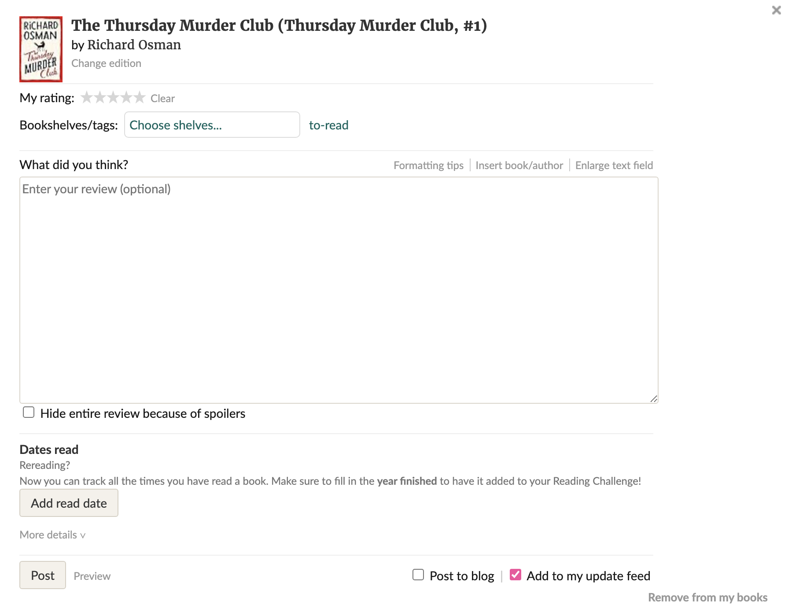

I enjoyed getting to read about practice of form design. I’ve had to create many survey forms, not out of code but using Google Forms or Qualitrics. I used to be in a Human-Centered Design club so we’d create surveys to post on forums to gain insights for our consulting projects. The part that was the most helpful but also felt like I should have known from the get-go was to add the more complicated questions towards the end. I often want to jump right into things and ask the hard questions first but I realize that might get people to back out early if they feel like they’re being jumped, and will ease in if the opening questions are easy and light.
The other part I was intrigued about was on explaining any input or formatting requirements. I have not done that before in forms but realize I’ve encountered it. Such as creating a password, most ask for 8-12 characters for a password or have character requirements so it can help users create stronger passwords rather than just one short sentence in lowercase.
full article here -> //uxdesign.cc/best-practices-for-form-design-ff5de6ca8e5f
A good example a form to me is from the website goodreads, see below:
They provide different types of form inputs such as rating, even what “bookshelf” you’d like to keep it in and a review. While it doesn’t follow typical form culture when we think of what a form is, like a survey, it fits a good form structure for reviewing but turning our reviews into a digital archive of our bookshelves. It leaves helpful comments and tips to help users understand the set up and even gives accessibility features.
If you have a goodreads account, you can check it out here: https://www.goodreads.com/